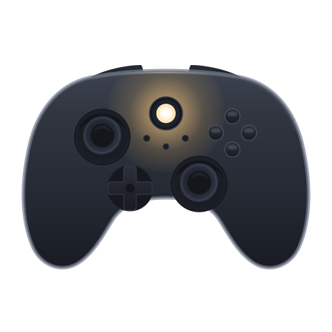

Lumbi
Apaga, baja o prende la luz del botón de tu control Xbox, en Windows y en Mac.
Descargar
Windows 11
En la Microsoft Store. Gratis.
PróximamenteEn Mac: abre el archivo descargado y arrastra Lumbi a Aplicaciones.
Qué hace
Eliges cómo quieres la luz con un clic:
Apagada
Tenue
Normal
Máxima
- Recuerda tu ajuste. El control no guarda la luz que elegiste; Lumbi se la vuelve a poner cada vez que lo conectas.
- Siempre a la mano. En la bandeja de Windows o en la barra de menús de la Mac: un clic en su ícono y listo; no te estorba mientras juegas.
- Se ve como tu sistema. En Windows 11 sigue tu tema y tu color de énfasis; en la Mac usa el vidrio de macOS.
- En Mac, la batería del control. Con el control por Bluetooth te muestra su batería y te avisa cuando le queda poca.
- En español y en inglés.
Con qué funciona
- Windows 11, o Mac con Apple Silicon y macOS 26 o más nuevo.
- Controles Xbox actuales conectados por cable USB.
- En Windows, con el adaptador inalámbrico Xbox debería funcionar igual; todavía está en prueba.
Por Bluetooth el control no permite cambiar la luz. Conéctalo con cable y Lumbi aplica tu ajuste. En Mac, por Bluetooth te muestra la batería.
Tu privacidad
Lumbi no recopila ni envía datos. Solo guarda tu ajuste en tu equipo. En Mac revisa una vez al día si hay una versión nueva, sin mandar datos tuyos, y lee la batería del control solo si le das permiso de Bluetooth. Más detalles en la política de privacidad.
¿Dudas?
Escríbenos a luviandev@outlook.com o revisa la página de soporte.